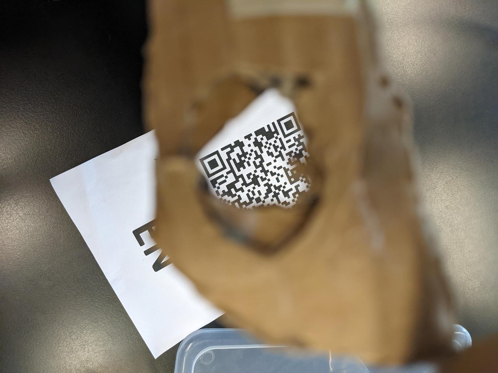

Product
Centraal zicht heeft als doel om Rotterdam Centraal beter toegankelijk te maken voor mensen
die niet in staat zijn de teksten te lezen op het station. Zij het door slechtziendheid of door het niet
verstaan
van de Nederlandse taal. Wij hopen dit probleem op te lossen door informatie te verschaffen in audio vorm.
Dit maakt niet alleen het station beter toegankelijk voor mensen met een visuele beperking, maar biedt ook de
mogelijkheid
om deze gesproken text in verschillende talen aan te bieden. Hier door wordt het station beter toegankelijk voor
iedereen. Een voordeel van onze techniek ten opzicht van de geleide lijn is dat we ook winkels en andere
diensten
op het station kunnen benoemen. Dit is niet alleen fijn voor de bezoekers, maar ook voor de winkels die hier mee
meer potentiële klanten krijgen. Wij hopen met dit product Rotterdam Centraal beter toegankelijk te maken voor
iedereen.


Locatie
Als locatie hadden wij Rotterdam Centraal Station. Deze locatie heeft al een aantal inclusiviteit die wordt aangeboden. Zo werdt het chinees nieuw jaar gevierd.
Ook zijn er hier voel lijnen naar de trappen en liften beschikbaar voor mensen die minder goed of niet kunnen zien. Helaas zijn andere faciliteiten minder goed beschikbaar.
Denk hier bij aan winkels, info desks en toiletten en restaurants. Dit gold ook voor mensen die de Nederlandse taal niet machtig waren.
Hoewel de internationale treinen zoals de Talisch nog wel in meer talen dan Nederland werden aangekondigd gold dit niet voor de andere treinen zoals die naar Amsterdam.
Dit leek ons enorm onhandig niet alleen voor de bezoekers/gebruikers
van het station maar ook voor de winkel eigenaren die hier door een heleboel klandizie mis lopen.
Over
Wij zijn een groep studenten die onderzoek hebben gedaan naar toegankelijkheid op Rotterdam Centraal.
Gezien het fijt dat dit een school project is staat ons project momenteel nog in de kinderschoenen.
We hopen dit concept in de toekomst compleet uit te werken. Helaas is daar op nit nog geen sprake van. Voor
Voorbeelden van onze huidige prototypes zie de product sectie.